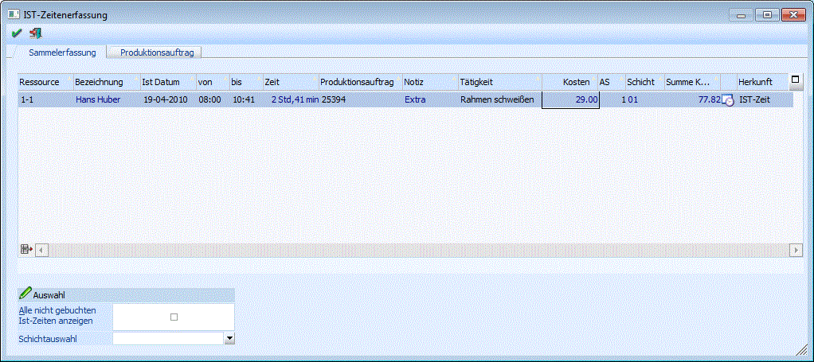
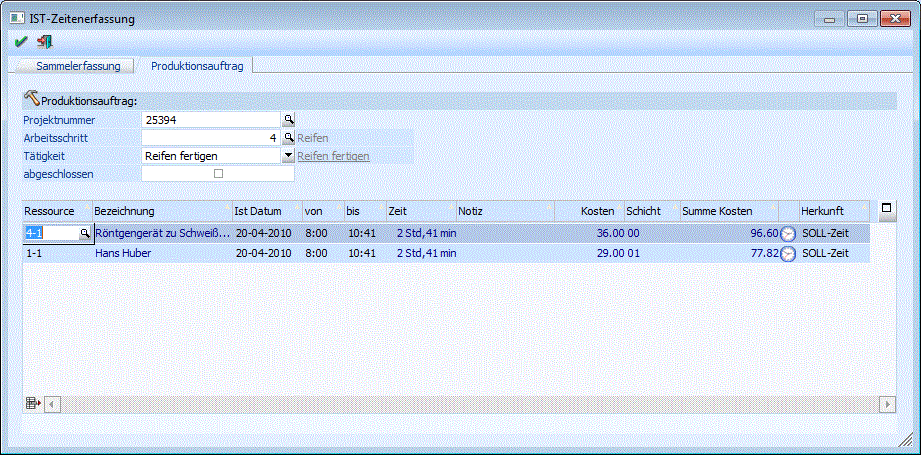
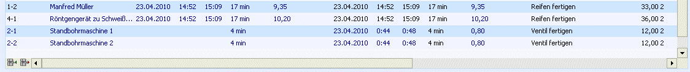

Im Programmpunkt
1 WinLine Produktion
1 Produktion
1 Ist-Zeiterfassung
können die Erfassung und Erledigung von Ist-Zeiten unabhängig von der Produktionsendmeldung durchgeführt werden.
Grundsätzlich ist das Fenster in 2 Register unterteilt:
Sammelerfassung
In diesem Register können laufend die Ist-Zeiten, welche die einzelnen Ressourcen für Projekte erbringen, erfasst.

Hinweis
Das gleichzeitige Arbeiten in diesem Fenster ist für Benutzer in Zusammenhang mit den folgenden anderen Fenstern gesperrt:
ü Tätigkeiten einplanen
ü Endmeldung
ü Schnellendmeldung
Folgende Eingabefelder stehen zur Erfassung der Ist-Zeiten zur Verfügung:
Ø Ressource
Auswahl der Ressource für die Ist-Zeiten erfasst werden sollen. Nach der Ressource kann mittels eines Matchcodes gesucht werden.
Ø Bezeichnung
Anzeige der Bezeichnung der Ressource (Infofeld).
Ø Ist Datum
Eingabe des Datums, an dem die Ressource eingesetzt wurde.
Ø von/bis
Eingabe des Zeitraums des Ressourceneinsatzes.
Ø Zeit
Zeigt die reine Arbeitszeit an, die aufgrund der Eingabe der von - bis Zeit, errechnet wird.
Ø Produktionsauftrag
Auswahl des Projektes für das die Ressource eingesetzt wurde. Nach dem Projekt kann gematcht werden.
Ø Notiz
Eingabe einer Notiz zu der erfassten Zeit. Diese kann auf der Projektnachkalkulation angedruckt werden.
Ø Tätigkeit
Auswahl der Tätigkeit, welche die Ressource verrichtet hat. Nach der Tätigkeit kann gematcht werden.
Ø Kosten
Anzeige der Kosten lt. Ressourcenstamm.
Ø AS (Arbeitsschritt)
Eingabe der Ebene (Arbeitsschritt) die bearbeitet wurde.
Ø Schicht
Auswahl der Schicht, in der die Tätigkeit durchgeführt wurde.
Ø Summe Kosten
Summe der Kosten, die sich aus Dauer * Kosten ergibt.
Ø Herkunft
Die Herkunft der Zeile ist an die letzte Spalte erkennbar. Symbol kennzeichnet eine "IST"-Zeit
Ø Einplanung %
In dieser Spalte wird der Teilverplanungsprozentsatz bei einer teilverplanten Zeile ausgewiesen.
Ø Alle noch nicht gebuchten Ist-Zeiten anzeigen
Solange eine Ist-Zeit nicht tatsächlich in der Prod.Endmeldung gebucht wurde, kann diese Zeile noch bearbeitet werden. Wird diese Checkbox aktiviert, so werden alle "noch offenen" Ist-Zeiten angezeigt.
Ø Schichtauswahl
Bei Aktivieren von Checkbox "Alle noch nicht gebuchten IST-Zeiten anzeigen" kann man zusätzlich die Auswahl der angezeigten noch nicht gebuchten IST-Zeit auch nach Schicht eingrenzen. Mit Option "00 Firmenkalender" werden alle noch nicht gebuchten IST-Zeiten angezeigt.
Produktionsauftrag

Ø Projektnummer
Der Produktionsauftrag wird in diesem Feld für die Bearbeitung ausgewählt.
Ø Arbeitsschritt
Der Arbeitsschritt, der bearbeitet werden soll, wird in diesem Feld selektiert.
Ø Tätigkeit
Auswahl der Tätigkeit, die bearbeitet werden soll.
Wurden noch keine IST-Zeiten für die selektierte Tätigkeit erfasst, werden automatisch die SOLL-Zeiten als Vorgabe vorgeschlagen.
Es ist möglich eine neue IST-Zeit direkt in der Tabelle einzugeben. Mit dem OK-Button werden die Eingaben in der Tabelle gespeichert. Dabei werden die vorgeschlagenen Sollzeiten in Herkunft "IST-Zeiten" umgewandelt.
Ø Abgeschlossen
Um eine Tätigkeit als abgeschlossen oder "erledigt" zu speichern wird diese Checkbox aktiviert und die Einstellung dann mit OK bestätigt. Sobald eine Tätigkeit abgeschlossen wird, kann sie nicht mehr in diesem Reiter bearbeitet werden.
Es können jedoch nachträglich die entstanden IST-Zeiten im Reiter "Sammelerfassung" bzw. später bei der Endmeldung noch geändert werden (in der Endmeldung kann man lediglich die gesamt benötige Dauer ändern, nicht die angegebenen Uhrzeiten.)
Sobald eine Tätigkeit abgeschlossen wird, werden die Restzeiten der Ressource wieder freigegeben, welche auch neu eingeplant werden können. Die ursprünglichen SOLL-Zeiten werden jedoch für den Soll-Ist-Vergleich beibehalten (z.B. für Auswertung "Ressourcenbelegung").
Felder in der Tabelle
Ø Ressource
Auswahl der Ressource für die Ist-Zeiten erfasst werden sollen. Nach der Ressource kann mittels eines Matchcodes gesucht werden.
Ø Bezeichnung
Anzeige der Bezeichnung der Ressource, Infofeld.
Ø Ist Datum
Eingabe des Datums, an dem die Ressource eingesetzt wurde.
Ø von/bis
Eingabe des Zeitraums des Ressourceneinsatzes.
Ø Zeit
Zeigt die reine Arbeitszeit an, die aufgrund der Eingabe der von - bis Zeit, errechnet wird.
Ø Notiz
Eingabe einer Notiz zu der erfassten Zeit. Diese kann auf der Projektnachkalkulation angedruckt werden.
Ø Kosten
Anzeige der Kosten lt. Ressourcenstamm.
Ø Schicht
Auswahl der betroffenen Schicht für die Ist-Zeit.
Ø Summe Kosten
Anzeige der errechneten Wert für Gesamtkosten der IST-Zeit.
Ø Herkunft
Die Herkunft der Zeile ist an die letzte Spalte erkennbar. Symbol kennzeichnet eine "SOLL"-Zeit. Symbol kennzeichnet eine "IST"-Zeit (d.h. eine Zeile, die z.B im Fenster "IST-Zeiterfassung" erfasst worden ist).
Ø OK-Taste
Die Ist-Zeiten werden gespeichert und in das entsprechende Projekt geschrieben.
Ø Ende-Taste
Der Arbeitsbereich wird verlassen.
Bei der Produktionsendmeldung werden diese erfassten Zeiten im Bildschirmbereich Ressourcen angezeigt.
